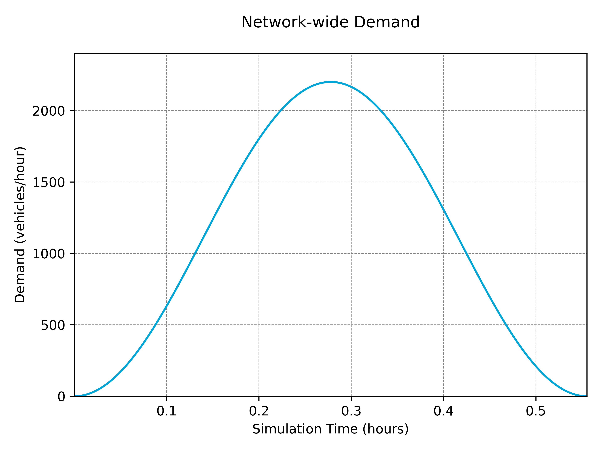
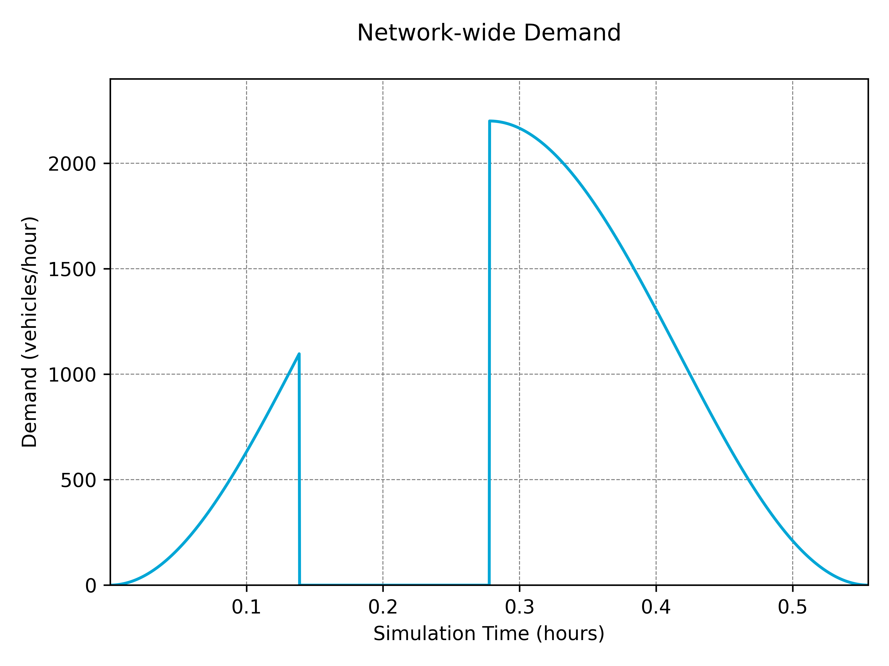

Traffic Demand
Demand Profiles
There are two approaches to adding demand to a simulation. The default approach is to define demand with routes or by flow within a '.rou.xml' file, in which case, nothing else needs to be done. Alternatively, demand can be generated more dynamically within TUD-SUMO. This is done using a DemandProfile object, intialised as below with a corresponding Simulation object.
from tud_sumo.simulation import Simulation
from tud_sumo.demand import DemandProfile
my_sim = Simulation(scenario_name="example", scenario_desc="Example simulation.")
my_sim.start("example_scenario.sumocfg")
dp = DemandProfile(my_sim)
dp2 = DemandProfile(my_sim)
Once the profile has been created, there are 3 ways to add demand; DemandProfile.load_demand(), DemandProfile.add_demand() or DemandProfile.add_demand_function(). All demand from a profile can also be plotted using DemandProfile.plot_demand() or Plotter.plot_demand().
Multiple demand profiles can be added to one simulation object, and can be controlled independently.
Loading Demand
DemandProfile.load_demand() can be used to load a pre-defined demand profile from a '.csv' file, in the format below. For a route, either an 'origin' and 'destination' or a 'route_id' is required. If using a route ID, the route must be pre-defined in the '.rou.xml' file. A time range for the demand is also required, either with a 'start_time/end_time' or 'start_step/end_step'. This time range is defined in seconds. The demand value can either be given as a flow value in vehicles/hour under 'demand' or as a raw number of vehicles under 'number'.
# Add multiple demands to the same profile
dp.load_demand("base_demand.csv")
dp.load_demand("peak_demand.csv")
If a flow value is given, vehicles are spawned throughout the demand period at this specified rate. Vehicles are inserted into the simulation using a Gaussian distribution with an average of 'demand' vehicle per hour. 'insertion_sd' is an optional float parameter that can be used to change the standard deviation of this distribution, and defaults to 1/3. Note that the actual standard deviation used is calculated using demand * insertion_sd. When the vehicles per step is below 1, vehicles are inserted at each step with this rate as a probability.
The other parameters are optional. 'vehicle_types' can be a list of vehicle type IDs or a single ID and can optionally be given with 'vehicle_type_dists'. When adding demand of multiple potential vehicle types, this allows for the distribution of types to be defined. If 'vehicle_types', the default vehicle type is used, and when 'vehicle_types' is given without a 'vehicle_type_dists', vehicle types have an equal distribution. 'initial_speed' defines the initial speed of vehicles at insertion and can either be 'max', 'random' or a number > 0, but defaults to 'max'. 'origin_lane' defines which lane vehicles are inserted at. This can either be 'random', 'free', 'allowed', 'best', 'first' or a specific lane index, but defaults to 'best'. 'origin_pos' defines the longitudinal position on the lane vehicles are inserted at. This can either be 'random', 'free', 'random_free', 'last', 'stop', 'splitFront' or a specific position, but defaults to 'base'. 'colour' can either be a hex code, list of RGB(A) values or a valid sumo colour.
More in-depth descriptions of the possible values can be found here. Two examples of the contents of a 'demand.csv' file are shown below.
| origin | destination | start_time | end_time | demand | vehicle_types | vehicle_type_dists | colour |
|---|---|---|---|---|---|---|---|
| edge_1 | edge_10 | 0 | 600 | 1200 | "cars,vans,lorries" | "0.7,0.2,0.1" | red |
| ... | ... | ... | ... | ... | ... | ... | ... |
| route_id | start_step | end_step | number | initial_speed | origin_lane | origin_pos | insertion_sd |
|---|---|---|---|---|---|---|---|
| route_1 | 0 | 1200 | 200 | max | 1 | random | 0.3 |
| ... | ... | ... | ... | ... | ... | ... | ... |
Adding Flows
Demand can also be added using the DemandProfile.add_demand() function. This uses the same set of parameters as the demand files above, except 'origin/destination/route_id' is replaced by a single routing parameter, and step_range is used instead of 'start_time/end_time' or 'start_step/end_step'. Demand is defined as a flow rate in vehicles/hour. Examples are shown below.
# Add vehicles, allowing them to use the most optimal route
# between 'edge_1' and 'edge_10' (found based on current conditions)
dp.add_demand(routing=("edge_1", "edge_10"),
step_range=(0, 1200),
demand=1200,
vehicle_types=["cars", "vans", "lorries"],
vehicle_type_dists=[0.7, 0.2, 0.2],
colour="#FF0000"
)
# Add vehicles to a specific (pre-defined) route
dp.add_demand(routing="route_1",
step_range=(0, 1200),
demand=200,
initial_speed="max",
origin_lane=1,
colour="magenta"
)
Demand Functions
Lastly, demand can be added using a demand function that calculates demand based on the step number. This is done using the DemandProfile.add_demand_function() function, which again uses the same parameters as DemandProfile.add_demand(), except demand is replaced by demand_function and parameters. demand_function is a function that takes step, the step number, as a parameter and outputs a flow value based on this. Other parameters can be passed into the function using a parameters dictionary.
An example of this is shown below, where a demand function cos() generates a demand profile using a cosine function.
def cos(step, peak, end_step=2000):
return (peak / 2) * (1 - math.cos((2 * math.pi * step) / end_step))
dp.add_demand_function(("edge1", "edge10"), (0, 2000), cos, {"peak": 2200}, vehicle_types="cars")
dp.plot_demand()

Removing Demand
Demand can be removed from a profile using the DemandProfile.remove_demand() function. This will remove all demand in the profile in a specific time range, defined in seconds. An example of this is shown below.
def cos(step, peak, end_step=2000):
return (peak / 2) * (1 - math.cos((2 * math.pi * step) / end_step))
dp.add_demand_function(("edge1", "edge10"), (0, 2000), cos, {"peak": 2200}, vehicle_types="cars")
# Remove all demand from the profile betwen 500-1000 seconds
dp.remove_demand(500, 1000)
dp.plot_demand()

Saving & Loading Profiles
Demand profiles can either be saved individually using DemandProfile.save(), which will save the profile as a serialised '.pkl' file, or using Simulation.save_objects(), which will save the profile alongside other objects (such as controllers). An example of this is shown below.
# Load demand from a '.csv' file
dp.load_demand("demand.csv")
# Save to a serialised file
dp.save("demand_profile_1.pkl")
# Save as part of an objects file
my_sim.save_objects("all_objects.json")
Loading a demand profile is done from a Simulation object using the Simulation.load_demand_profiles() or Simulation.load_objects() functions. If loading an individual profile, ensure the routes are valid for the simulation. Any vehicle types created for the profile will be recreated.
# Load two demand profiles into the simulation
demand_profiles = my_sim.load_demand_profiles(["demand_profile_1.pkl", "demand_profile_2.pkl"])
demand_profiles[0].load_demand("peak_demand.pkl")
# Load objects into the simulation, including any added demand profiles
my_sim.load_objects("all_objects.json")
Alternatively, a DemandProfile object can be converted into a '.rou.xml' file, using the DemandProfile.create_route_file() function. This will save any demand added to the profile as a route file that can be used within SUMO. This can be beneficial as demand defined this way will run much faster than using solely DemandProfile objects.
dp.create_route_file("demand.rou.xml")
new_sim = Simulation(scenario_name="example", scenario_desc="Example simulation.")
new_sim.start("example_scenario.sumocfg", route_file="demand.rou.xml")
Note that data from vehicles added through a DemandProfile will be slightly different to those in a '.rou.xml' due to the way vehicles are inserted. In heavy traffic conditions, average trip times may also be much larger with a DemandProfile object as trip times are calculated using their scheduled entry into the simulation, and does not account for any insertion delay.
Vehicle Types
Vehicle types can be added to a DemandProfile using the DemandProfile.add_vehicle_type() function. The parameters are the same as in Simulation.add_vehicle_type(), outlined here. Any vehicle types added to a demand profile are saved along with the profile and added to any '.rou.xml' files created from the profile. An example of this is shown below.
my_sim = Simulation(scenario_name="example", scenario_desc="Example simulation.")
my_sim.start("example_scenario.sumocfg")
# Create a custom white 'vans' vehicle type to the demand profile
dp.add_vehicle_type("vans", "delivery", colour="white", min_gap=0.5)
# Load demand from a '.csv' file
dp.load_demand("demand.csv")
# Save to a serialised file
dp.save("demand_profile.pkl")
# Create a '.rou.xml' file, containing 'vans' vehicle type
dp.create_route_file("routes.rou.xml")
# Create a new/separate simulation object
new_sim = Simulation(scenario_name="example", scenario_desc="Example simulation.")
new_sim.start("example_scenario.sumocfg")
# Load the profile and 'vans' vehicle type into the new simulation
new_dp = new_sim.load_demand_profiles("demand_profile.pkl")
Once a vehicle type has been added to a demand profile, any other demand profile linked to the same Simulation object can use this same vehicle type. However, these new types are not saved to any of the other profiles.